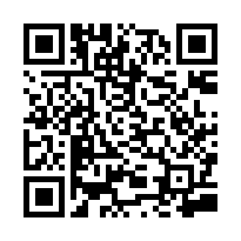
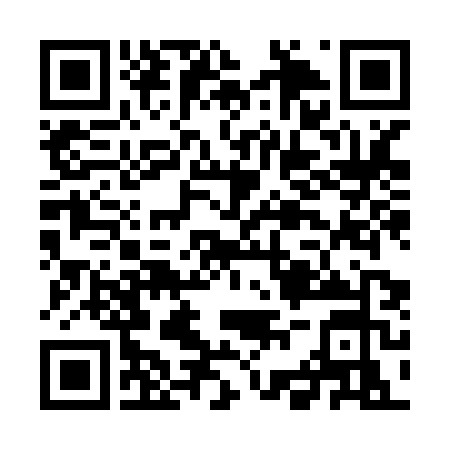
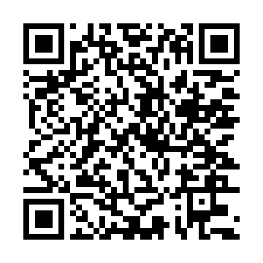

החלפת מפרק ירך
Замена тазобедренного сустава
החלפת מפרק ירך בגישה קדמית: מה חשוב לדעת
Замена тазобедренного сустава передним доступом: что важно знать
החלפת מפרק הברך
Замена коленного сустава
שברים בחלק העליון של עצם הירך (כולל שברים בצוואר הירך)
Переломы верхней части бедренной кости (включая переломы шейки бедра)
קיפופלסטיקה
Кифопластика
למינקטומיה
Ламинэктомия
איחוי חוליות וכריתת דיסק
Спондилодез и дискэктомия
ניתוחי עמוד שדרה אחרים
Другие операции на позвоночнике

הכנה לניתוח
Подготовка к операции
אחרי הניתוח: סימני אזהרה
После операции: тревожные признаки
אחרי הניתוח במחלקה והכנה לשחרור
После операции в отделении и подготовка к выписке
למה לא כדאי להישאר שנים ללא טיפול בכאב במפרק
Почему не нужно годами оставаться без помощи при боли в суставе
שבר בקרסול: ניתוח והחלמה
Перелом лодыжки: операция и восстановление
ארתרוסקופיה של הברך
Артроскопия колена

ניתוח לקיבוע שבר: פלטות, ברגים ומסמרים (אוסטאוסינתזה)
Операция при переломе: пластины, винты, стержни (остеосинтез)
זריקות נגד קרישי דם בבית: אנוקסאפרין (קלקסן, קרוסיה)
Уколы против тромбов дома: эноксапарин (Клексан, Крусия)
קטיעת רגל
Ампутация ноги
שבר בעצם הזרוע ליד מפרק הכתף
Перелом плеча у плечевого сустава
שבר בשורש כף היד (עצם הרדיוס)
Перелом запястья (лучевой кости)
בלבול פתאומי אחרי ניתוח (דליריום): מידע לבני משפחה
Внезапная спутанность после операции (делирий): памятка для близких
איך לא ליפול: בבית החולים ובבית אחרי ניתוח
Как не упасть: в больнице и дома после операции
כאב אחרי ניתוח: איך לשלוט בו
Боль после операции: как её контролировать
פצעי לחץ: איך למנוע אותם
Пролежни: как их предупредить
תרגילי נשימה אחרי ניתוח
Дыхательные упражнения после операции
הליכון: איך ללכת בבטחה
Ходунки: как ходить безопасно
נפיחות ברגל אחרי ניתוח: קור והרמת הרגל
Отёк ноги после операции: холод и возвышенное положение
איך לקום מהמיטה אחרי ניתוח בעמוד השדרה
Как вставать с кровати после операции на позвоночнике

ניתוח בעמוד השדרה: הכול לפי הסדר
Операция на позвоночнике: всё по порядку

תפירת גיד אכילס
Шов ахиллова сухожилия
אחרי הרדמה כללית: גרון, ישנוניות, סחרחורת
После общего наркоза: горло, сонливость, головокружение
צלוליטיס: דלקת זיהומית של העור
Инфекция кожи и подкожной клетчатки (целлюлит)
בדיקת משטח ל־CPE ול־VRE: למה לוקחים אותה
Мазок на CPE и VRE: зачем его берут
פצע בכף הרגל בסוכרת
Рана на стопе при сахарном диабете
החלפת חבישה בפצע הניתוח: מתי ובמה
Перевязка послеоперационной раны: когда и чем
קרע בקרום הקשה (דורה) במהלך ניתוח בעמוד השדרה (דורוטומיה)
Разрыв твёрдой мозговой оболочки при операции на позвоночнике (дуротомия)
רוויון חמצן בשינה אחרי הרדמה, וחמצן
Насыщение крови кислородом (сатурация) во сне после наркоза
זיהום מוגלתי: מורסה, פלגמונה וניתוח לניקוי הפצע
Гнойная инфекция: абсцесс, флегмона и операция по очистке раны
תיקון השרוול המסובב בכתף
Шов вращательной манжеты плеча
החלפת מפרק הכתף: אנטומית והפוכה
Эндопротезирование плечевого сустава: анатомическое и реверсивное
בבית אחרי החלפת מפרק הירך: אביזרי עזר ותנועות בטוחות
Дома после замены тазобедренного сустава: приспособления и безопасные движения